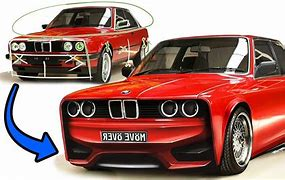
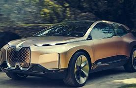
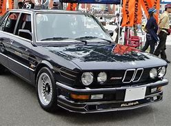

Our Services
First
Die angegebenen Werte wurden nach dem vorgeschriebenen Messverfahren ermittelt. Es handelt sich um die „NEFZ-CO₂-Werte“ i. S. v. Art. 2 Nr. 1 Durchführungsverordnung (EU) 2017/1153. Die Kraftstoffverbrauchswerte wurden auf Basis dieser Werte errechnet. Der Stromverbrauch wurde auf der Grundlage der

Second
Die angegebenen Werte wurden nach dem vorgeschriebenen Messverfahren ermittelt. Es handelt sich um die „NEFZ-CO₂-Werte“ i. S. v. Art. 2 Nr. 1 Durchführungsverordnung (EU) 2017/1153. Die Kraftstoffverbrauchswerte wurden auf Basis dieser Werte errechnet. Der Stromverbrauch wurde auf der Grundlage der

Thirth
Die angegebenen Werte wurden nach dem vorgeschriebenen Messverfahren ermittelt. Es handelt sich um die „NEFZ-CO₂-Werte“ i. S. v. Art. 2 Nr. 1 Durchführungsverordnung (EU) 2017/1153. Die Kraftstoffverbrauchswerte wurden auf Basis dieser Werte errechnet. Der Stromverbrauch wurde auf der Grundlage der
Forth
Die angegebenen Werte wurden nach dem vorgeschriebenen Messverfahren ermittelt. Es handelt sich um die „NEFZ-CO₂-Werte“ i. S. v. Art. 2 Nr. 1 Durchführungsverordnung (EU) 2017/1153. Die Kraftstoffverbrauchswerte wurden auf Basis dieser Werte errechnet. Der Stromverbrauch wurde auf der Grundlage der

Fifth
Die angegebenen Werte wurden nach dem vorgeschriebenen Messverfahren ermittelt. Es handelt sich um die „NEFZ-CO₂-Werte“ i. S. v. Art. 2 Nr. 1 Durchführungsverordnung (EU) 2017/1153. Die Kraftstoffverbrauchswerte wurden auf Basis dieser Werte errechnet. Der Stromverbrauch wurde auf der Grundlage der
Sixth
Die angegebenen Werte wurden nach dem vorgeschriebenen Messverfahren ermittelt. Es handelt sich um die „NEFZ-CO₂-Werte“ i. S. v. Art. 2 Nr. 1 Durchführungsverordnung (EU) 2017/1153. Die Kraftstoffverbrauchswerte wurden auf Basis dieser Werte errechnet. Der Stromverbrauch wurde auf der Grundlage der
Seventh
Die angegebenen Werte wurden nach dem vorgeschriebenen Messverfahren ermittelt. Es handelt sich um die „NEFZ-CO₂-Werte“ i. S. v. Art. 2 Nr. 1 Durchführungsverordnung (EU) 2017/1153. Die Kraftstoffverbrauchswerte wurden auf Basis dieser Werte errechnet. Der Stromverbrauch wurde auf der Grundlage der

Eighth
Die angegebenen Werte wurden nach dem vorgeschriebenen Messverfahren ermittelt. Es handelt sich um die „NEFZ-CO₂-Werte“ i. S. v. Art. 2 Nr. 1 Durchführungsverordnung (EU) 2017/1153. Die Kraftstoffverbrauchswerte wurden auf Basis dieser Werte errechnet. Der Stromverbrauch wurde auf der Grundlage der